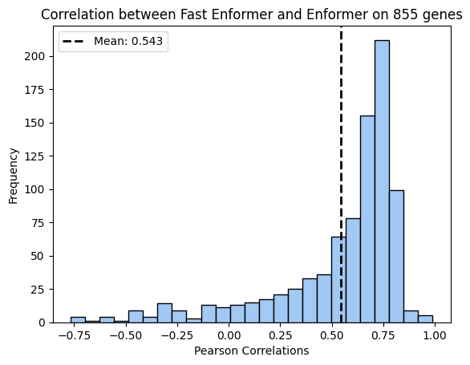
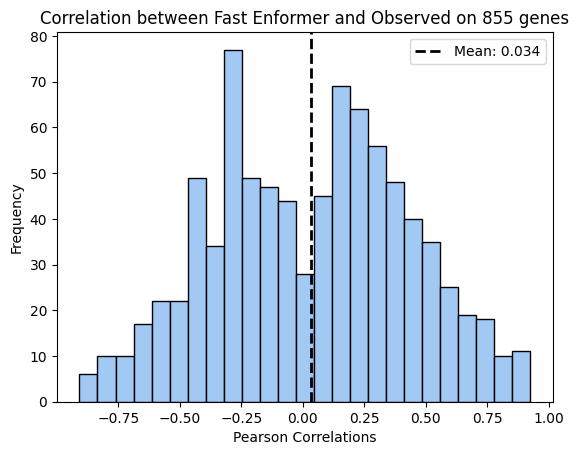
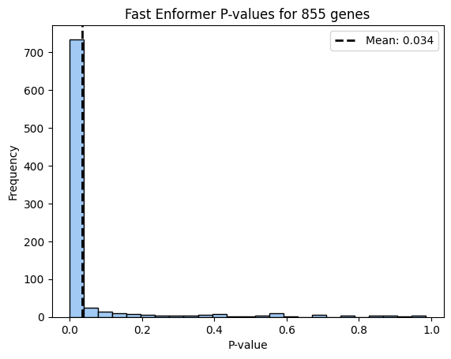

Code
import pandas as pd
import numpy as np
import tensorflow as tf
import h5py
import os
import time
columns = ['POS', 'ACI', 'BN', 'BUF', 'F344', 'M520', 'MR', 'WKY', 'WN']Takeaways
Step 1: Import libraries
import pandas as pd
import numpy as np
import tensorflow as tf
import h5py
import os
import time
columns = ['POS', 'ACI', 'BN', 'BUF', 'F344', 'M520', 'MR', 'WKY', 'WN']Step 2: Read samples, genes and define paths
pred_expr = pd.read_csv("/home/s1mi/enformer_rat_data/output/Br_human_predicted_expression.csv", index_col=0)
individuals = list(pred_expr.index)
gene_annot = pd.read_csv("/eagle/AIHPC4Edu/sabrina/Br_predictions/HS_founder_epigenomes/gene_mapping.txt")
genes_df = gene_annot[gene_annot['gene'].isin(pred_expr.columns)]probabilities_dir = "/home/s1mi/Br_genotype_probabilities"
reference_dir = "/eagle/AIHPC4Edu/sabrina/Br_predictions/HS_founder_epigenomes/human"
output_dir = "/eagle/AIHPC4Edu/sabrina/Br_prediction_from_founders"
run_dir = "/home/s1mi/Github/deep-learning-in-genomics/posts/2024-01-10-epigenomexcan-vs-enformer-significant-genes"Step 4: Define interpolation algorithm, matrix operations, and gene looping
def interpolate(x, xi, y):
j = tf.argsort(tf.concat((x, xi), axis=-1))
k = tf.range(len(j))
q = tf.scatter_nd(j[:, tf.newaxis], k, k.shape)
lxi = len(xi)
r = q[-lxi:]-tf.range(0, lxi)
r = tf.where(xi == x[-1], q[-1:] - lxi, r)
x2 = tf.gather(x, r)
x1 = tf.gather(x, r-1)
y2 = tf.gather(y, r)
y1 = tf.gather(y, r-1)
u = (xi-x1)/(x2-x1)
if not tf.rank(u) == tf.rank(y1):
u = tf.expand_dims(u, axis=-1)
yi = (1.0-u)*y1 + u*y2
return tf.where(y1 == y2, y1, yi)
def compute_epigenome(ref_matrix, start, end, prob):
x = tf.constant(prob['POS'].values)
y = tf.constant(prob.drop(columns=['POS']).values)
bins = tf.linspace(start, end, 896)
pr_tensor = tf.expand_dims(tf.cast(interpolate(x, bins, y), dtype=tf.float32), axis=1)
ref_tensor = tf.transpose(ref_matrix, perm=[1, 0, 2])
# pr_tensor = tf.cast(pr_tensor, dtype=tf.float16)
# ref_tensor = tf.cast(ref_tensor, dtype=tf.float16)
output = tf.squeeze(tf.matmul(pr_tensor, ref_tensor), axis=1)
return output
def run_sample_predictions(prob, reference_file, gene_annot):
predictions = []
for index, row in gene_annot.iterrows():
gene = row['gene']
tss = row['tss']
start = tss - 57344
end = tss + 57344
if (start >= prob.iloc[0,0] and end <= prob.iloc[-1,0]):
with h5py.File(reference_file, "r") as hf:
ref_matrix = hf[gene][:]
output = compute_epigenome(ref_matrix, start, end, prob)
# Process genotype probabilities
predictions.append(np.average(output[446:450,4980]))
return predictionsI split genes by chromosome for the computations. As it ran for each gene group, I recorded runtimes for batches of 20 individuals.
# Split into batches by chromosome
for chr, group in genes_df.groupby("chromosome"):
print(f"{chr}: {len(group)} genes")
reference_file = os.path.join(reference_dir, f"{chr}_genes.h5")
probabilities_file = os.path.join(probabilities_dir, f"{chr}_probabilities.h5")
output_file = os.path.join(output_dir, f"{chr}_selected_genes.csv")
# If individual has gene expression data, remove from list
if os.path.exists(output_file):
haplo_expr = pd.read_csv(output_file, index_col=0)
completed_individuals = haplo_expr.dropna().index
individuals = pred_expr.index.difference(completed_individuals)
else:
haplo_expr = pd.DataFrame(columns=group['gene'], index=pred_expr.index)
individuals = haplo_expr.index
with h5py.File(os.path.join(probabilities_dir, f"{chr}_probabilities.h5"), "r") as input:
tic = time.perf_counter()
for index, individual in enumerate(individuals):
prob = pd.DataFrame(input[individual][:], columns=columns)
predictions = run_sample_predictions(prob, reference_file, group)
if ((index + 1) % 20 == 0):
toc = time.perf_counter()
print(f"Batch {(index + 1)//20}: {(toc - tic)/60} minutes")
haplo_expr.loc[individual] = predictions
haplo_expr.to_csv(output_file)Write partial results if walltime is about to run out.
haplo_expr.to_csv(output_file)Error in atexit._run_exitfuncs:
Traceback (most recent call last):
File "/soft/datascience/conda/2022-09-08/mconda3/lib/python3.8/site-packages/IPython/core/history.py", line 831, in writeout_cache
self._writeout_input_cache(conn)
File "/soft/datascience/conda/2022-09-08/mconda3/lib/python3.8/site-packages/IPython/core/history.py", line 814, in _writeout_input_cache
conn.execute("INSERT INTO history VALUES (?, ?, ?, ?)",
sqlite3.OperationalError: disk I/O errorStep 1: Import libraries
import pandas as pd
import numpy as np
import os
from scipy import stats
import matplotlib.pyplot as plt
import statsmodels.api as sm
import seaborn as sns
colors = sns.color_palette("pastel")Step 2: Reformat observed, Enformer, and Fast Enformer expression data
# read observed, Enformer predicted expression and cross-population correlation by gene
tpm = pd.read_csv("/home/s1mi/enformer_rat_data/expression_data/Brain.rn7.expr.tpm.bed", sep="\t", header=0, index_col='gene_id')
pred_expr = pd.read_csv("/home/s1mi/enformer_rat_data/output/Br_human_predicted_expression.csv", index_col=0)
cors = pd.read_csv("/home/s1mi/enformer_rat_data/output/Br_personalized_pearson_corr_human.csv", index_col = 0)/tmp/ipykernel_213776/3280649170.py:3: DtypeWarning: Columns (0) have mixed types. Specify dtype option on import or set low_memory=False.
tpm = pd.read_csv("/home/s1mi/enformer_rat_data/expression_data/Brain.rn7.expr.tpm.bed", sep="\t", header=0, index_col='gene_id')# concatenate fast enformer predictions from all chromosomes
output_dir = "/eagle/AIHPC4Edu/sabrina/Br_prediction_from_founders"
outputs = []
for file in os.listdir(output_dir):
df = pd.read_csv(os.path.join(output_dir, file), index_col=0)
outputs.append(df)
haplo_expr = pd.concat(outputs, axis=1)# subset to genes with fast enformer predictions
gene_list = haplo_expr.columns.intersection(cors.index)
cors = cors.loc[gene_list]
obs_expr = tpm.loc[gene_list].drop(columns=["#chr", "start", "end"]).transpose()
pred_expr = pred_expr[gene_list]
haplo_expr = haplo_expr[gene_list]Scatter Plot of predicted expression for individua-gene pairs
Each dot represents a individual-gene pair
x = pred_expr.values.flatten()
y = haplo_expr.values.flatten()
corr, _ = stats.pearsonr(x,y)
plt.scatter(x, y, label=f'Pearson R: {corr:.3f}', marker='o', color=colors[0])
# sns.regplot(x=x, y=y, ci=None, line_kws={'label': f'Correlation: {corr:.3f}'})
plt.xlabel('Enformer')
plt.ylabel('Fast Enformer')
plt.title('Scatter plot of individual-gene predictions from Enformer and Fast Enformer')
# plt.plot(x, slope * x + intercept, '--', color="black", label=f'Best Fit Line: y = {slope:.3f}x + {intercept:.3f}')
plt.plot(x, x, '--', color="grey", label=f'One-to-One Line')
plt.legend()
plt.show()
Histogram of Fast Enformer correlation to Enformer expression
::: {.cell 0=‘c’ 1=‘o’ 2=‘d’ 3=‘e’ 4=‘-’ 5=‘f’ 6=‘o’ 7=‘l’ 8=‘d’ 9=‘:’ 10=‘t’ 11=‘r’ 12=‘u’ 13=‘e’ execution_count=7}
output_cors = pd.DataFrame(columns = ["r", "pval"], index = gene_list)
for gene in gene_list:
individuals = haplo_expr[gene].dropna().index
corr, pval = stats.pearsonr(pred_expr.loc[individuals, gene].values, haplo_expr.loc[individuals, gene].values)
output_cors.loc[gene] = [corr, pval]
# Plot a pearson_corr_by_gene["human"]histogram
plt.hist(output_cors["r"], bins=25, edgecolor='black', color=colors[0]) # 'bins' determines the number of bins or bars
plt.title(f'Correlation between Fast Enformer and Enformer on {len(gene_list)} genes')
plt.xlabel('Pearson Correlations')
plt.ylabel('Frequency')
mean = np.mean(output_cors["r"])
plt.axvline(mean, color='black', linestyle='dashed', linewidth=2, label=f'Mean: {mean:.3f}')
plt.legend()
# Display the plot
plt.show()
:::
Distribution of Pearson R, P-value
To plot the performance of gene expression derived from fast Enformer (haplotype probabilities \(\times\) founder epigenomes) compared to observed expression.
output_cors = pd.DataFrame(columns = ["r", "pval"], index = gene_list)
for gene in gene_list:
individuals = haplo_expr[gene].dropna().index
corr, pval = stats.pearsonr(obs_expr.loc[individuals, gene].values, haplo_expr.loc[individuals, gene].values)
output_cors.loc[gene] = [corr, pval]
# Plot a pearson_corr_by_gene["human"]histogram
plt.hist(output_cors["r"], bins=25, edgecolor='black', color=colors[0]) # 'bins' determines the number of bins or bars
plt.title(f'Correlation between Fast Enformer and Observed on {len(gene_list)} genes')
plt.xlabel('Pearson Correlations')
plt.ylabel('Frequency')
mean = np.mean(output_cors["r"])
plt.axvline(mean, color='black', linestyle='dashed', linewidth=2, label=f'Mean: {mean:.3f}')
plt.legend()
# Display the plot
plt.show()
# Plot a pearson_corr_by_gene["human"]histogram
plt.hist(output_cors["pval"], bins=25, edgecolor='black', color=colors[0]) # 'bins' determines the number of bins or bars
plt.title(f'Fast Enformer P-values for {len(gene_list)} genes')
plt.xlabel('P-value')
plt.ylabel('Frequency')
mean = np.mean(output_cors["r"])
plt.axvline(mean, color='black', linestyle='dashed', linewidth=2, label=f'Mean: {mean:.3f}')
plt.legend()
# Display the plot
plt.show()
Comparing Gene Performance between Enformer and Fast Enformer
# Fit a linear regression line to the data (calculate slope)
x = cors["pearson r"].values.astype(np.float32)
y = output_cors["r"].values.astype(np.float32)
# slope, intercept = np.polyfit(x, y, 1)
# Create the plot
plt.scatter(x, y, label='Genes', marker='o', color=colors[0])
# plt.plot(x, slope * x + intercept, '--', color="black", label=f'Best Fit Line: y = {slope:.3f}x + {intercept:.3f}')
plt.plot(x, x, '--', color="grey", label=f'One-to-One Line')
plt.title("Pearson Correlations from Enformer and Fast Enformer methods")
# Add labels and legend
plt.xlabel('Enformer')
plt.ylabel('Fast Enformer')
plt.legend()
# Show the plot
plt.show()def qqR(corvec, nn, title):
# nn is the sample size, the number of individuals used to compute correlation
# corvec is the correlation vector
mm = len(corvec)
nullcorvec = np.tanh(np.random.normal(size=mm) / np.sqrt(nn - 3)) # null correlation vector
sm.qqplot_2samples(nullcorvec, corvec)
plt.plot([0, 1], [0, 1], color='grey') # Diagonal line
plt.title(title)
plt.grid()
plt.show()import parsl
from parsl.configs.htex_local import config
from parsl import python_app
parsl.load(config)<parsl.dataflow.dflow.DataFlowKernel at 0x7ff447dc34f0>def interpolate(x, xi, y):
j = tf.argsort(tf.concat((x, xi), axis=-1))
k = tf.range(len(j))
q = tf.scatter_nd(j[:, tf.newaxis], k, k.shape)
lxi = len(xi)
r = q[-lxi:]-tf.range(0, lxi)
r = tf.where(xi == x[-1], q[-1:] - lxi, r)
x2 = tf.gather(x, r)
x1 = tf.gather(x, r-1)
y2 = tf.gather(y, r)
y1 = tf.gather(y, r-1)
u = (xi-x1)/(x2-x1)
if not tf.rank(u) == tf.rank(y1):
u = tf.expand_dims(u, axis=-1)
yi = (1.0-u)*y1 + u*y2
return tf.where(y1 == y2, y1, yi)
def compute_epigenome(reference_file, gene, start, end, prob):
x = tf.constant(prob['POS'].values)
y = tf.constant(prob.drop(columns=['POS']).values)
bins = tf.linspace(start, end, 896)
pr_tensor = tf.expand_dims(interpolate(x, bins, y), axis=1)
with h5py.File(reference_file, "r") as hf:
matrix = hf[gene][:]
ref_tensor = tf.transpose(matrix, perm=[1, 0, 2])
pr_tensor = tf.cast(pr_tensor, dtype=tf.float16)
ref_tensor = tf.cast(ref_tensor, dtype=tf.float16)
output = tf.squeeze(tf.matmul(pr_tensor, ref_tensor), axis=1)
return output
def run_sample_predictions(prob, reference_file, gene_annot):
predictions = []
for index, row in gene_annot.iterrows():
gene = row['gene']
tss = row['tss']
start = tss - 57344
end = tss + 57344
if (start >= prob.iloc[0,0] and end <= prob.iloc[-1,0]):
output = compute_epigenome(reference_file, gene, start, end, prob)
# Process genotype probabilities
predictions.append(np.average(output[446:450]))
return predictions
@python_app
def run_predictions(probabilities_file, reference_file, group, individuals, output_file, log_file, module_path = run_dir):
import time
import h5py
import pandas as pd
import sys
sys.path.append(module_path)
from tensor_helpers import run_sample_predictions
start_time = time.perf_counter()
haplo_expr = pd.DataFrame(columns=group['gene'], index=individuals)
f = open(log_file, "w")
with h5py.File(probabilities_file, "r") as input:
for individual in individuals:
tic = time.perf_counter()
columns = ['POS', 'ACI', 'BN', 'BUF', 'F344', 'M520', 'MR', 'WKY', 'WN']
prob = pd.DataFrame(input[individual][:], columns=columns)
predictions = run_sample_predictions(prob, reference_file, group)
haplo_expr.loc[individual] = predictions
toc = time.perf_counter()
f.write(individual, "...", toc - tic, "sec\n")
end_time = time.perf_counter()
haplo_expr.to_csv(output_file)
f.write('Completed job in', (end_time - start_time) / 60 ,'minutes.')
f.close()
return haplo_exprapp_futures = []
for chr, group in genes_df.groupby("chromosome"):
reference_file = os.path.join(reference_dir, f"{chr}_genes.h5")
probabilities_file = os.path.join(probabilities_dir, f"{chr}_probabilities.h5")
output_file = os.path.join(output_dir, f"{chr}_selected_genes.csv")
log_file = os.path.join(output_dir, f"{chr}_selected_genes.log")
app_futures.append(run_predictions(probabilities_file, reference_file, group, individuals, output_file, log_file, module_path = run_dir))
exec_futures = [q.result() for q in app_futures]reference_file = os.path.join(reference_dir, f"{chr}_genes.h5")
probabilities_file = os.path.join(probabilities_dir, f"{chr}_probabilities.h5")
individuals = pred_expr.indeximport tensorflow as tf
def interpolate(x, xi, y):
j = tf.argsort(tf.concat((x, xi), axis=-1))
k = tf.range(len(j))
q = tf.scatter_nd(j[:, tf.newaxis], k, k.shape)
lxi = len(xi)
r = q[-lxi:]-tf.range(0, lxi)
r = tf.where(xi == x[-1], q[-1:] - lxi, r)
x2 = tf.gather(x, r)
x1 = tf.gather(x, r-1)
y2 = tf.gather(y, r)
y1 = tf.gather(y, r-1)
u = (xi-x1)/(x2-x1)
if not tf.rank(u) == tf.rank(y1):
u = tf.expand_dims(u, axis=-1)
yi = (1.0-u)*y1 + u*y2
return tf.where(y1 == y2, y1, yi)
def compute_epigenome(reference_file, gene, start, end, prob):
x = tf.constant(prob['POS'].values)
y = tf.constant(prob.drop(columns=['POS']).values)
bins = tf.linspace(start, end, 896)
pr_tensor = tf.expand_dims(tf.cast(interpolate(x, bins, y), dtype=tf.float32), axis=1)
with h5py.File(reference_file, "r") as hf:
matrix = hf[gene][:]
ref_tensor = tf.transpose(matrix, perm=[1, 0, 2])
output = tf.squeeze(tf.matmul(pr_tensor, ref_tensor), axis=1)
return output
def run_sample_predictions(prob, reference_file, gene_annot):
predictions = []
for index, row in gene_annot.iterrows():
gene = row['gene']
tss = row['tss']
start = tss - 57344
end = tss + 57344
if (start >= prob.iloc[0,0] and end <= prob.iloc[-1,0]):
output = compute_epigenome(reference_file, gene, start, end, prob)
# Process genotype probabilities
predictions.append(np.average(output[446:450]))
return predictionshaplo_expr = pd.DataFrame(columns=group['gene'], index=individuals)
with h5py.File(probabilities_file, "r") as input:
for individual in individuals:
tic = time.perf_counter()
columns = ['POS', 'ACI', 'BN', 'BUF', 'F344', 'M520', 'MR', 'WKY', 'WN']
prob = pd.DataFrame(input[individual][:], columns=columns)
predictions = run_sample_predictions(prob, reference_file, group)
haplo_expr.loc[individual] = predictions
toc = time.perf_counter()
print(individual, "...", toc - tic, "sec")
break000789972A ... 13.396942946012132 sec